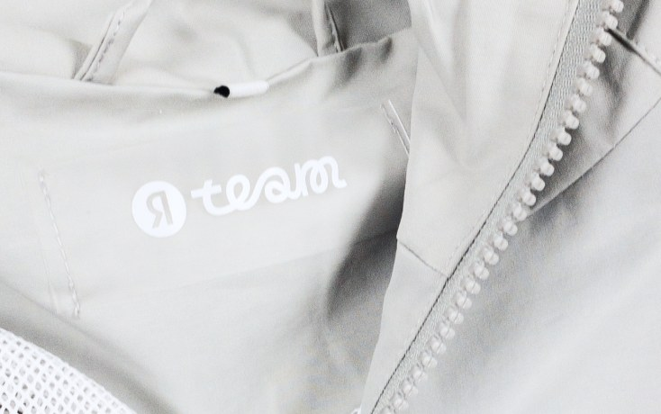

Ветровки для поиска
Yandex Search


Поиск Яндекс
Ветровки для команды поиска — это задача другого масштаба. 1600 изделий, каждое из которых должно было сохранить качество и точность на уровне образца. Проект включал полный цикл: от подбора и согласования материалов до промежуточных примерок и тестирования ключевых элементов, включая рефлективную печать.
Для этого тиража были изготовлены индивидуальные молнии, разработана силиконовая бирка с печатью, а логотип выполнен с использованием рефлективной технологии. Эти элементы не просто декоративные — они влияют на восприятие продукта и его функциональность.
Такие проекты проверяют не только производство, но и способность удерживать систему на масштабе. Здесь продукт легко теряет точность, если процесс не выстроен целиком. В данном случае результат держится за счет контроля на каждом этапе — от утверждения дизайна до финальной отгрузки — и способности воспроизводить качество без потерь.